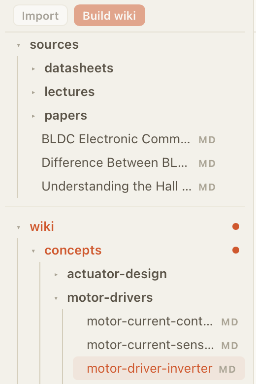

Create a wiki workspace
Start with one topic, course, archive, project, or skill path.
Local AI wiki builder
Turn PDFs, notes, links, and research scraps into a local wiki that you can review, explore, and keep on your Mac.
For Apple silicon Macs. Requires macOS 12 or newer.

Workflow
Inspired by Andrej Karpathy's LLM Wiki: keep raw sources separate while an AI-maintained wiki becomes the working layer for learning and research.
Start with one topic, course, archive, project, or skill path.
Add PDFs, Markdown, text notes, links, screenshots, or papers.
Use your AI subscription to compile summaries, concepts, and guides.
Read pages, follow links, and ask questions from your wiki.
Turn useful Q&A or selected chat messages into reviewable wiki changes.
Improve pages, run healthchecks, clean up links, and keep the wiki useful as it grows.
Beginner guide
A wiki is a set of linked pages about one subject. Maple keeps your original files in one place, then uses AI to draft a readable wiki from them. You review the draft before it becomes part of your workspace.
Instead of asking chat the same question again and again, Maple turns your PDFs, notes, links, and screenshots into pages you can keep, edit, search, and revisit later.
Your imported files are the reference shelf.
AI drafts summaries, concepts, and guides from those sources.
Review generated changes before relying on them.

Start by importing the files you already have. When you click Build wiki, Maple asks AI to organize them into pages.

The wiki becomes a browsable notebook with concepts, summaries, and guides instead of one long chat conversation.

AI output is treated as a draft. Open each change, check it, and only keep the updates that make sense.

Explore Chat uses the current page and nearby wiki files as context, so answers stay connected to your workspace.

When an answer is worth keeping, choose the current Q&A or selected messages, add a note, and let Maple draft the update.

Run healthchecks, improve weak pages, organize sources, and save rules so the wiki stays useful as it grows.
Local first
Maple is built around plain local folders: sources stay immutable, generated wiki pages are reviewable, and the workspace can be opened outside the app when you need it.
The MVP does not add app accounts, payments, or sync.
Workspaces use readable folders like sources, wiki, index.md, and log.md.
Generated edits are tracked so you can inspect what changed.